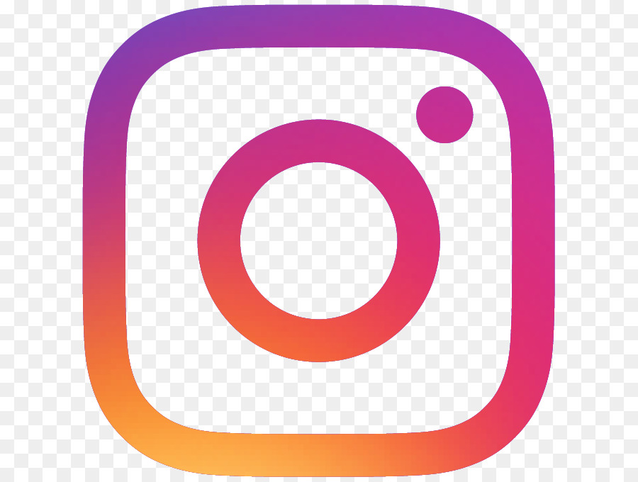

I am Dogukan Gök. I have been born in Balcova/Izmir. When I was three, my parents moved to Balikesir and I lived there until I graduated secondary school. Then my parents moved to Izmir and I lived there for my highschool years. And now I am in Gazi Uni, studying Computer Science. My hobbies are computer games, music, playing guitar, watching movies, going to gym, the theater club playing basketball and football, and reading books. I love classic literature, reading about science and philosophy, metal music, the bands Tool, Metallica and Insomnium in particular, The Elder Scrolls series, The Witcher, Lord of the Rings and Marvel universes.
|  |  |
 |